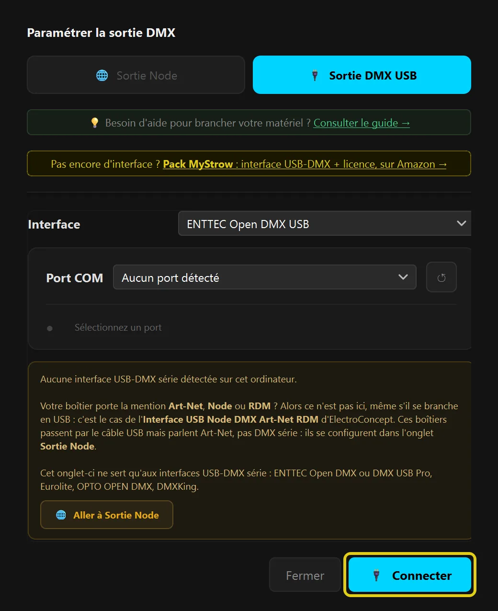
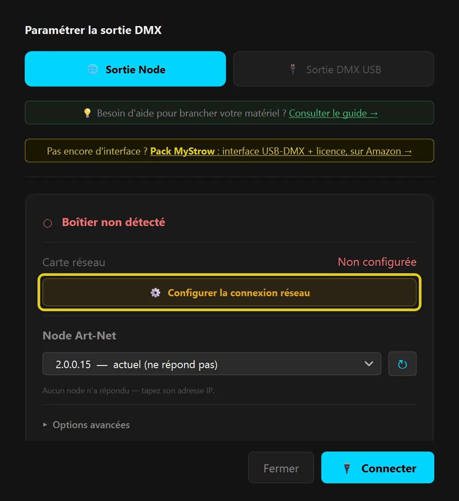
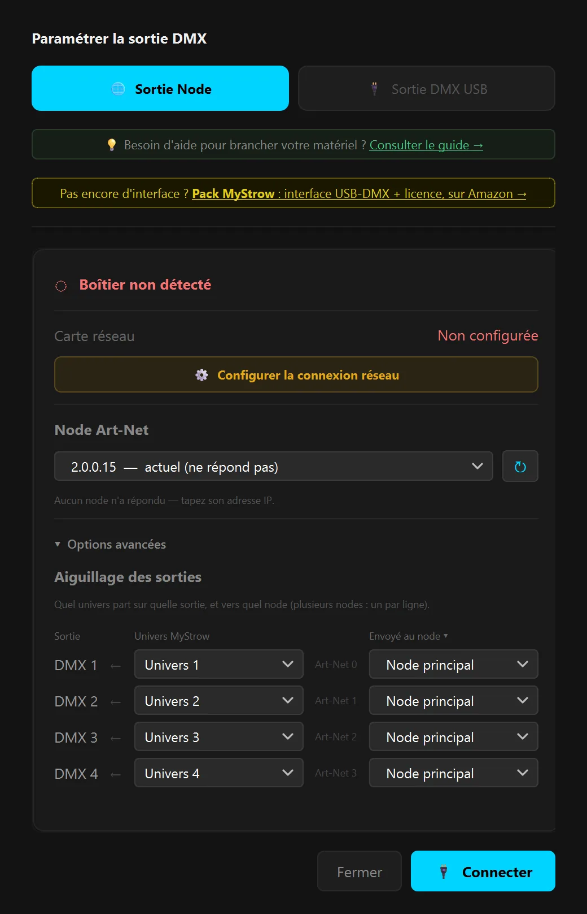
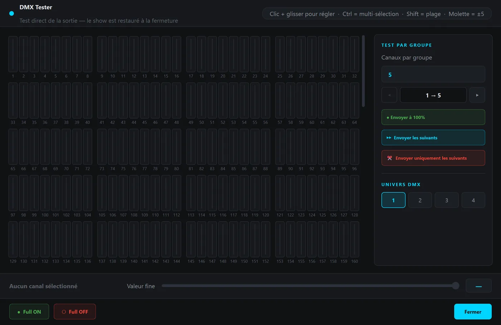

Sortie DMX :
relier MyStrow aux projecteurs
Pour que MyStrow pilote de vrais projecteurs, il lui faut une interface DMX entre l'ordinateur et le premier projecteur. Ce chapitre couvre tout ce qui se passe dans Connexion › 🌐 Sortie DMX et dans les outils de test.
Le principe : ordinateur → interface → projecteurs
L'ordinateur ne sort pas de DMX tout seul. On branche une interface :
- en USB : un boîtier USB-DMX (ENTTEC, Eurolite, Open DMX…) ;
- en réseau : un node Art-Net relié par câble Ethernet (RJ45), directement ou via un switch.
De l'interface part un câble DMX (XLR) vers le premier projecteur, puis de projecteur en projecteur. Une ligne DMX = un univers = 512 canaux. MyStrow gère jusqu'à 4 univers.
Pendant les 15 jours d'essai, la sortie DMX fonctionne. Après l'essai, elle demande une licence active.
Ouvrir la fenêtre Sortie DMX
Menu Connexion › 🌐 Sortie DMX. La fenêtre « Paramétrer la sortie DMX » a deux onglets :
- 🌐 Sortie Node : les nodes Art-Net reliés en réseau, et les boîtiers qui se branchent en USB mais parlent Art-Net, comme le USB NODE DMX du Pack MyStrow ;
- 🔌 Sortie DMX USB : les interfaces USB-DMX série (MyStrow USB-DMX MS-DMY, ENTTEC, Eurolite, OPTO, DMXKing…).
Le lien Consulter le guide, en haut de la fenêtre, ouvre l'aide au branchement. Quand vous branchez le boîtier USB-DMX MyStrow, MyStrow le reconnaît tout seul et propose de le connecter.
Interface USB-DMX (onglet Sortie DMX USB)
- Branchez l'interface en USB (de préférence directement sur l'ordinateur, sans hub).
- Dans Interface, choisissez votre modèle : MyStrow USB-DMX (MS-DMY), Eurolite USB-DMX512 PRO (MK2), ENTTEC DMX USB Pro, ENTTEC Open DMX USB, OPTO OPEN DMX (ElectroConcept), DMXKing UltraDMX Micro, ou Autre interface USB-DMX.
- Choisissez le Port COM qui apparaît quand l'interface est branchée.
- Cliquez sur 🔌 Connecter. Sur la plupart des interfaces, une LED passe au vert quand la sortie DMX est active.
Votre boîtier porte la mention Art-Net, Node ou RDM ? Même s'il se branche en USB, il ne se règle pas ici : passez par l'onglet Sortie Node. C'est le cas du USB NODE DMX.
« Port inaccessible » : un autre logiciel (QLC+, Freestyler, Chataigne…) occupe l'interface. Fermez-le : un seul logiciel à la fois peut l'utiliser.
Une interface USB ne transporte qu'un seul univers. Brancher plusieurs interfaces USB ne donne pas plusieurs univers : pour cela, il faut des nodes Art-Net.
Pour un Open DMX ou une interface à puce FTDI, installez le pilote FTDI si MyStrow le propose.

Node Art-Net (onglet Sortie Node)
- Reliez le node à l'ordinateur en câble Ethernet (évitez le Wi-Fi pour le DMX).
- Dans Carte réseau, vérifiez la carte reliée au node.
- Dans Node Art-Net, choisissez votre node dans la liste des appareils qui ont répondu, ou tapez son adresse IP. Rechercher à nouveau sur le réseau relance la détection.
- Cliquez sur 🔌 Connecter.
Le réseau doit être dans la même plage que le node. Beaucoup de nodes Art-Net sont en 2.x.x.x (les boîtiers ElectroConcept sont réglés d'usine sur 2.0.0.15), d'autres en 192.168.x.x. Le bouton ⚙️ Configurer la connexion réseau lance un assistant qui :
- vous fait choisir la carte réseau reliée au boîtier (pas la Wi-Fi) ;
- règle l'ordinateur en
2.0.0.1/ masque255.0.0.0, soit avec Configurer automatiquement (demande les droits administrateur : 🔑 Relancer en administrateur), soit à la main avec Je configure moi-même, qui affiche les étapes Windows ; - teste la connexion et confirme « Boîtier connecté ! ».
Si MyStrow trouve le boîtier à une autre adresse que celle qu'il cherche, il le dit et propose un bouton Utiliser [adresse] : un clic suffit, rien n'est à changer sur le réseau.
Au premier lancement, autorisez MyStrow dans le pare-feu quand Windows le demande : sans cela, le node n'est pas trouvé.

Plusieurs univers et plusieurs nodes
Dans l'onglet Sortie Node, Options avancées › Aiguillage des sorties indique, pour chaque ligne DMX, quel univers part dessus et vers quel node.
- Node à 2 ou 4 sorties : un seul boîtier suffit, chaque sortie porte son univers.
- Plusieurs nodes à 1 sortie : donnez à chaque node sa propre adresse IP et son univers Art-Net (avec l'utilitaire du fabricant), puis choisissez le bon node sur chaque ligne du tableau.
- Deux lignes peuvent porter le même univers : c'est le miroir, pour doubler une ligne à l'autre bout de la salle sans splitter.
- Une ligne peut être Désactivée ou servir d'Entrée DMX (pupitre), pour piloter MyStrow depuis une console.
Ensuite, dans le patch, placez chaque projecteur dans l'univers de la ligne où il est câblé (les adresses repartent de 1 dans chaque univers). Pas à pas complet : plusieurs univers avec plusieurs nodes Art-Net.

Tester la sortie : DMX Tester et Moniteur DMX
Édition › 🔬 DMX Tester envoie des valeurs directement sur les canaux, sans passer par le patch. C'est l'outil pour savoir si un projecteur reçoit bien le DMX :
- choisissez l'Univers DMX, cliquez-glissez sur les canaux pour régler leur valeur (Ctrl = plusieurs canaux, Maj = une plage, molette = ±5) ;
- des boutons montent ou descendent les 512 canaux d'un coup ;
- TEST PAR GROUPE allume les canaux par paquets (réglez Canaux par groupe, puis ▶▶ Envoyer les suivants) pour retrouver l'adresse d'un projecteur ;
- les faders du contrôleur MIDI pilotent 9 canaux à la fois ;
- à la fermeture, le show est restauré tel qu'il était.
Édition › 📡 Moniteur DMX montre en direct ce qui part réellement sur chaque univers : canaux actifs, images par seconde, interface utilisée, et un avertissement si un univers n'est pas émis (par exemple l'univers 2 sur une interface USB, qui ne transporte que l'univers 1).

Diagnostic d'une sortie muette
Menu Connexion › 🩺 Diagnostic :
- 🌐 Test RJ45 (réseau / Node Art-Net) : vérifie câble, carte réseau, adresse IP et réponse du boîtier, et propose de corriger ce qui cloche ;
- 🔌 Test USB (interface DMX) : vérifie l'interface USB et son port ;
- 🩺 Diagnostic complet (BRAD) : enchaîne tous les tests de la sortie Art-Net. Le bouton 📋 Copier le rapport ou ✉️ Envoyer au support nous transmet le résultat.
Les causes les plus fréquentes, dans l'ordre :
- un autre logiciel lumière ouvert, qui occupe l'interface ;
- une interface USB Art-Net (USB NODE) cherchée dans l'onglet USB au lieu de la Sortie Node ;
- ordinateur et node pas dans la même plage d'adresses IP, ou pare-feu qui bloque ;
- le projecteur n'est pas à l'adresse ni dans le mode DMX du patch (le DMX sort, mais le projecteur écoute ailleurs) : le DMX Tester le révèle tout de suite ;
- câble USB, port ou câble DMX défectueux.
Sur Mac, si la sortie est restée sur « USB » alors que vous utilisez un node, rouvrez la Sortie DMX et choisissez Art-Net.
Quelle interface DMX acheter pour MyStrow ?
N'importe quelle interface USB-DMX ou node Art-Net du commerce fonctionne. Le plus simple est le Pack MyStrow (interface + licence) : MyStrow la reconnaît et la règle tout seul. Pour plus d'un univers, prenez un node Art-Net.
Combien de projecteurs puis-je piloter ?
Un univers fait 512 canaux, et MyStrow gère jusqu'à 4 univers (2 048 canaux). Le nombre de projecteurs dépend du nombre de canaux de chacun : un PAR en 7 canaux en prend 7, une lyre en 16 canaux en prend 16.
Le Wi-Fi suffit-il pour un node Art-Net ?
C'est possible mais déconseillé : le Wi-Fi ajoute des coupures et de la latence. Reliez le node en câble Ethernet, directement ou via un switch.
Mon interface est reconnue mais rien ne s'allume.
Ouvrez Édition › 🔬 DMX Tester et montez les canaux du projecteur. S'il s'allume, la sortie fonctionne : c'est l'adresse ou le mode DMX du patch qui ne correspond pas au projecteur. S'il reste éteint, vérifiez le câble DMX et lancez Connexion › 🩺 Diagnostic.